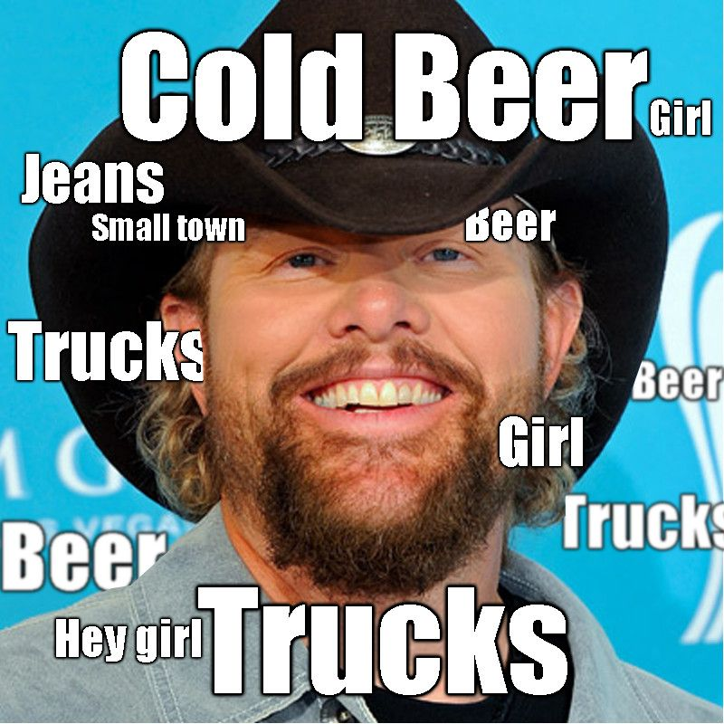

Why You Shouldn't Listen to Country Music on the Radio:
Country radio is the laughing stock of the music industry because every song on the radio sounds like some variation of this....

But thankfully, country music has a few good artists out there that are rewriting this narrative. Their songs are poetic and lyrically beautiful, like this song by Zach Bryan